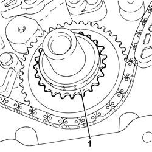
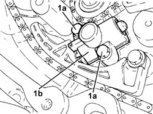
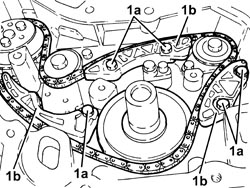
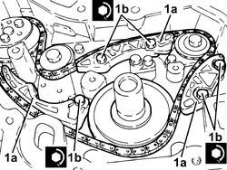

1092B93 WATER PUMP /BALANCING SHAFT DRIVE CHAIN TENSIONER PADS R R
- Path
- Procedures > 10 ENGINE > 1092 ENGINE COMPONENT MISCELLANEOUS DRIVES > 1092B WATER PUMP AND ALTERNATOR DRIVE > 1092B93 WATER PUMP /BALANCING SHAFT DRIVE CHAIN TENSIONER PADS R R
- Kind
- repair procedure (removal / refitting; the operation number is the code)
- Applies to
- engines: 2.2 JTS, 2.4 JTD 20v; all production periods
- Interactive page
- https://sloeber94.github.io/elrnDB-aBrrSpdr/en/#/946002032
Applies to: engines: 2.2 JTS; all production periods
 Removing
Removing
 Refitting
Refitting- Position the vehicle on a lift.
- Make sure that the ignition key is in the OFF position, then disconnect the negative battery terminal (-).
Description | Connector | |
|---|---|---|
- | Battery |
Op. 4450B04 RIGHT FRONT WHEEL - R.R
Op. 7055B66 ENGINE COMPARTMENT DUST COVER IN RIGHT FRONT WHEEL ARCH - R.R.
Op. 1032A12 TIMING SYSTEM DRIVE CHAIN - R.R
1. Remove the timing drive pulley.

Applies to: engines: 2.2 JTS; all production periods
1. Unscrew bolts (1a) and remove water pump/balancer shaft drive chain hydraulic tensioner (1b).

Applies to: engines: 2.2 JTS; all production periods
1. Undo bolts (1a) and remove chain tensioner pads (1b).

Applies to: engines: 2.2 JTS; all production periods
Refitting
Removing1. Place chain tensioner pads (1a) in their housings and secure them by tightening bolts (1b) to the recommended torque.
Component | Fastening | dia | Value (daNm) | Validity |
|---|---|---|---|---|
Water pump/balancing shafts drive chain tensioner pad(s) | Bolt | M6 | 0.7 ÷ 0.9 | 2.2 JTS |

Applies to: engines: 2.2 JTS; all production periods
1. Fit a suitable pin (diameter 1.5 mm) to secure the counter-rotating shaft and water pump drive chain tensioner.
2. Refit water pump/balancer shaft drive chain hydraulic tensioner (2a) and secure by tightening bolts (2b) to the specified torque.
Component | Fastening | dia | Value (daNm) | Validity |
|---|---|---|---|---|
Water pump/balancing shafts drive chain hydraulic tensioner | Bolt | M6 | 0.7 ÷ 0.9 | 2.2 JTS |
- Remove the pin locking the counter-rotating shaft and water pump drive chain tensioner.

Applies to: engines: 2.2 JTS; all production periods
- Place the timing drive chain pulley in its housing.
Op. 1032A12 TIMING SYSTEM DRIVE CHAIN - R.R
Op. 7055B66 ENGINE COMPARTMENT DUST COVER IN RIGHT FRONT WHEEL ARCH - R.R.
Op. 4450B04 RIGHT FRONT WHEEL - R.R
- Connect the negative battery terminal (-).
Op. 0010T11 ENGINE OIL - CHECK LEVEL AND TOP UP, IF NECESSARY
- Remove the vehicle from the lift.